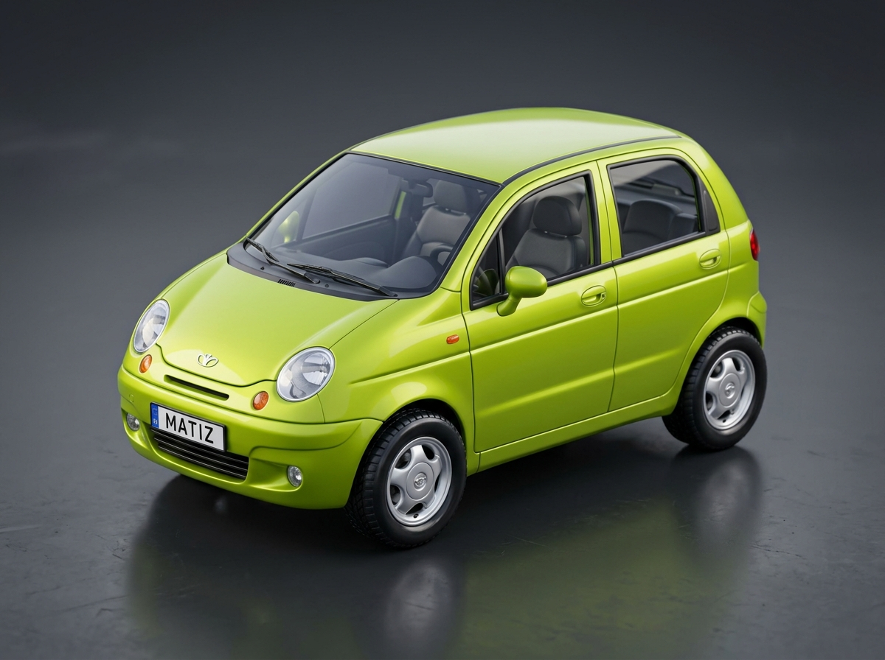

Chorrahada Ustunlik Qoidalari
3 / 5 bilet topshirildi
TRASSADA POYGA: KIM BIRINCHI?
Savollarga tez va to'g'ri javob berib, do'stingizdan oldin 100m marraga yetib boring! Xato qilsangiz, radarga tushasiz.
"Sardor chorraha testida to'xtamasdan radarga tushdi (-1.125.000 so'm) va tezligi pasayib ketdi!"
MENING GARAJIM
Testlardagi har bir xato mashinangizga shikast yetkazadi! Qoidalarni bilsangiz, yangi mashina olasiz.
Daewoo Matiz II
"Kichkina, chaqqon, lekin svetoforda gazni bossangiz ham o'ylanib turadi."
Mashinalar Ierarxiyasi
SHOPIR PASS & IMTIYOZLAR
Imtihondan 1-urinishdayoq yiqilmasdan o'tish uchun maxsus to'plamlar
3 TA DO'STNI TAKLIF QILING VA VIP OCHING!
Pul to'lash shart emas! Do'stlaringizga havolangizni yuboring, 3 tasi kelsa — Shopir Pass VIP butunlay tekinga faollashadi!
SHOPIR PASS VIP ⭐
30 kunlik to'liq kirish huquqi